Preface
2012년 4월, 모 게임회사의 개발자 컨퍼런스가 열린다는 소식을 듣고, 기쁜 마음에 해당 컨퍼런스의 홈페이지에 접속했다. 대형 포털 업체의 블로그 시스템을 이용한 페이지라 조금 실망했지만, 보통 이런 행사에 인력을 충분히 할당할 수 없음을 알기에 이해했다.
하지만, 일정표를 거대한 이미지 파일 하나로 배포하는 것을 보고, 아쉬운 마음을 감출 수 없었다. 개발자 컨퍼런스라는 것이 단순히 발표를 듣고 끝내는 것이 아니라, 개발자 간 교류의 장이 되고 그 안에서 새로운 기회를 발견하는 것을 자주 목격했기에, 이를 위해 적절한 온라인 '시장'이 필요하다고 생각했다.
늘 그렇듯 회사 일에 치여, 컨퍼런스에 참여하지도 못했고 '시장'도 만들지 못했다. 그리고 1년이 지나, 다시 한 번 같은 회사에서 개발자 컨퍼런스를 연다고 했을 때, 이번에는 좋은 세션도 많이 듣고, 다른 개발자들도 만나고 싶어 바로 참가신청을 했다. 헌데, 작년과 마찬가지로 올해도 같은 블로그 시스템에, PDF 형식으로 자료를 배포하는 것을 보니, 너무 안타까웠다.
잡소리가 길었다. 그냥 이건 좀 아니다 싶었고, 그래서 만들기로 했다. 올해 배포된 자료를 보고 다음의 기능을 갖춘 팬 사이트를 만들면 좋겠다 싶었다.
- 태그가 제공되니, 태그에 맞춰 필터링하기.
- 발표자의 홈페이지, 트위터 아이디 등의 기본 정보와 발표 자료, 비디오를 잘 모아보기.
- 세션을 진행할 때 사용할 수 있도록, 질문 등을 댓글 기능을 통해 받을 수 있도록 하기.
- 어떤 세션을 들을지 미리 체크해둘 수 있는 기능.
- 가능하면 페이스북 그래프를 통해, 나랑 같은 세션을 들을 친구가 누구인지 확인하기.
기술/구현에 대해서는 다음에 것들을 달성하고 싶었다.
- 모바일 기기에서 잘 보여지기. 단순히 잘 보여지는게 아니라, 정보의 누락을 최소화하기.
- 댓글 플러그인을 도입해서, 부담을 줄이기.
- 비밀번호 없이 이메일로 로그인하는 기능을 시도하기.
- Flat UI가 대세라고 하니, 이걸 한 번 써보기.
- Django를 너무 대충 써와서, Class-based View 등을 써보기.
- 만든 코드를 공개하여, 그럭저럭 괜찮은 Django 샘플 코드로 활용되기.
'하라는 일은 안하고' 작업을 시작했다. 작업하는 동안 화면을 종종 캡춰했고, 이를 정리해봤다.
4월 11일
23:29 딸을 재우고 와이프가 TV를 보는 동안 작업을 시작했다.
23:29 Github에 리포지터리를 생성했다. 리포지터리를 생성하는 것만으로도 뭔가 달성한 기분이 든다.
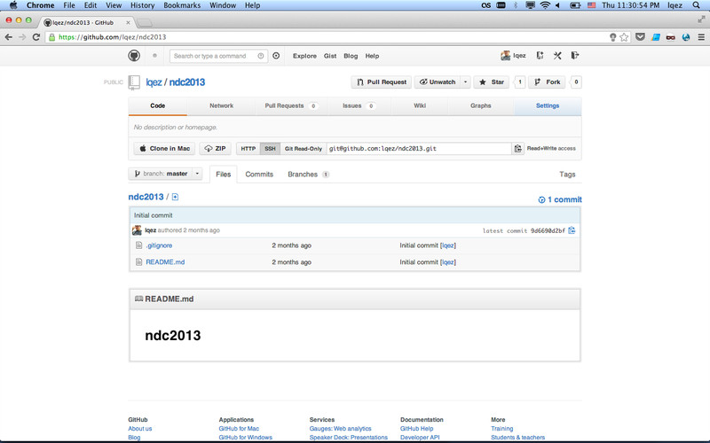
23:30 virtualenv를 통해 독립 공간을 마련하고, Django 1.5 를 설치했다. 일단 It worked.
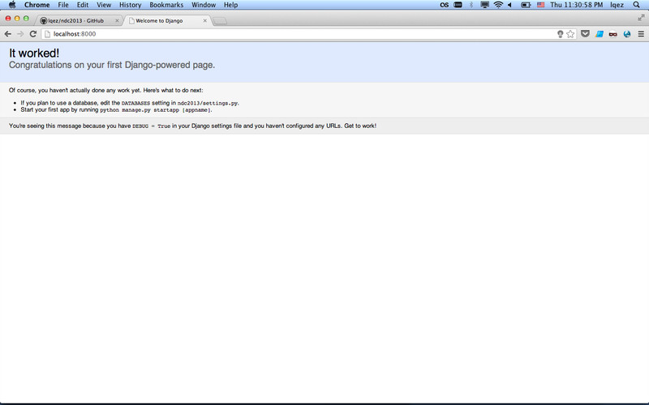
23:35 자료를 훑어보며 모델을 어떻게 만들지 고민했다.
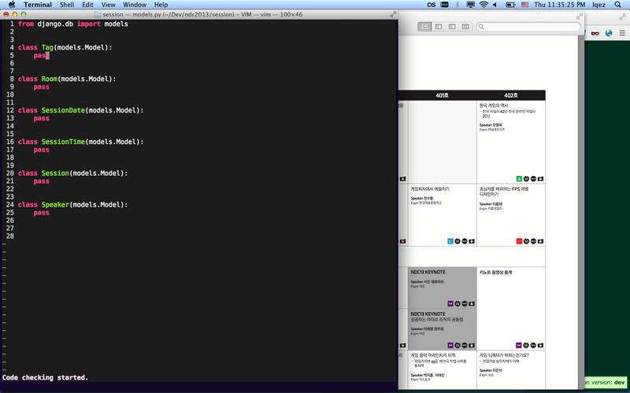
23:47 syncdb로 처음으로 데이터베이스를 생성했다.
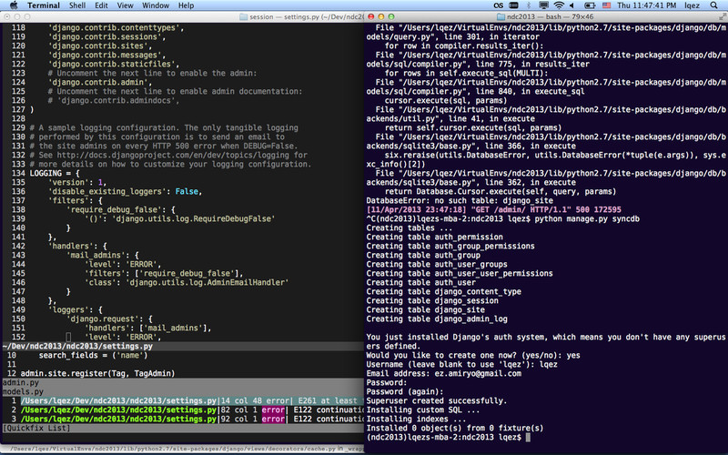
00:00 PDF 자료를 확대하여 이미지를 일부 캡춰했다. 원래 아이콘이나 이미지가 있어야 작업이 잘 되니까 일단 쓸데없는 짓을 좀 했다.
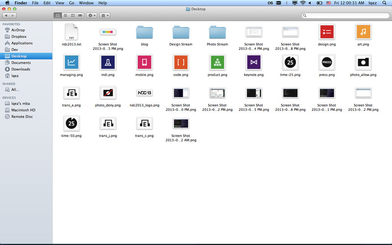
00:07 자료를 보며 Django admin을 통해 기초 데이터를 입력하기 시작했다. 갈 길이 멀다.
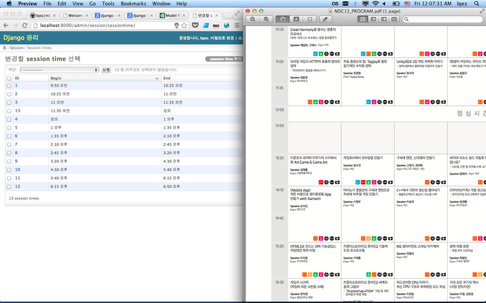
00:17 머리가 나쁘니까 손발이 고생한다. 잘못 설계된 모델들을 수정하기 위해 south를 설치하고 마이그레이션을 하기 시작했다.
머리가 나쁜 것을 탓하다 졸려서 잠들었다.
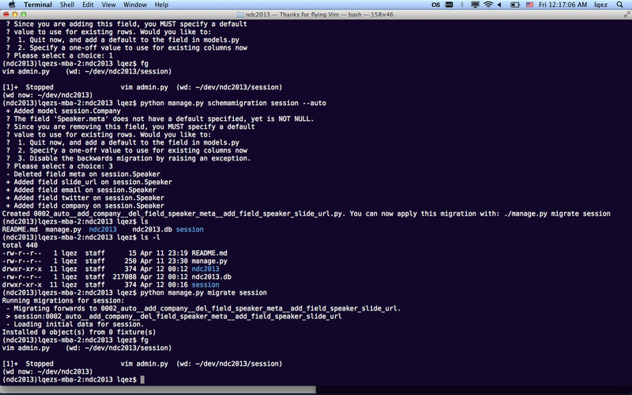
4월 12일
14:46 회사에 출근은 했는데, 마음은 밭에 가 있으니 오전 내내 싱숭생숭하다가, 점심 먹고 데이터 입력을 시작했다.
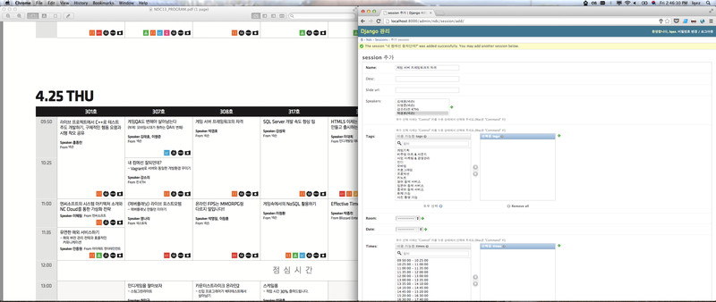
15:50 데이터 입력만 한 시간 내내 해서 드디어 입력을 끝냈다. 자동으로 긁는 도구를 만들까 하다가 그게 더 큰 일이 될게 뻔하니 관두고 몸빵했다.
다 하고 나니 눈치가 보여서 회사 일을 좀 했다.
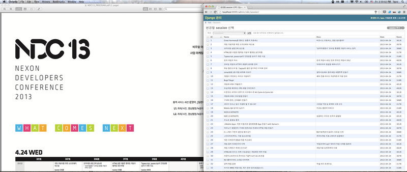
18:47 저녁을 회사에서 먹고 드디어 첫 템플릿 코드를 작성했다. 그냥 목록이 나오는거 뿐인데도 뿌듯했다.
이후에 타임테이블용 템플릿 작업을 무지하게 했는데 머리가 잘 안돌아가서 걍 퇴근했다. 역시 야근... 아니 밤에 코딩하는건 효율이 나쁘다.
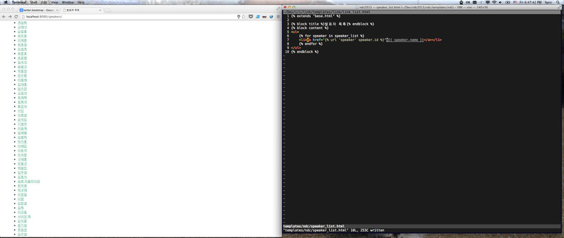
4월 13일 - 4월 14일
팬심이 아무리 강해도, 유부남의 주말은 가족과 함께 보낼 수 밖에 없다. 한 줄도 못 짜고 이틀이 지나갔다.
4월 15일
10:50 집에서 회사까지 약 5km 정도 되는데, 아침부터 뭔 바람이 불었는지 걸어서 출근했다.
쉰냄새를 풍기면서 타임테이블 템플릿 코딩을 계속했다. 엉성하지만 출력되는 것을 보고 조금 감동했다. <table> 태그 따위에 말이지.
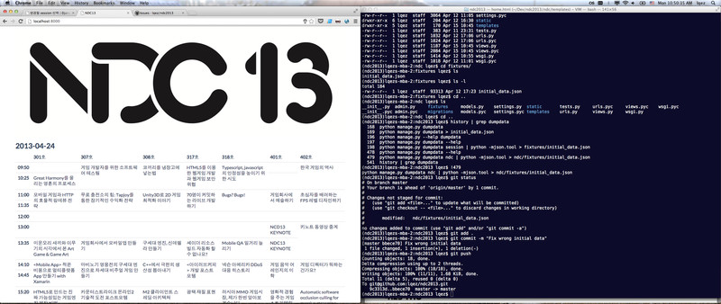
11:08 눈에 뭐가 보이니까, 장식 예술을 슬슬 하기 시작했다. 지난 주에 미리 캡춰해둔 이미지가 있어 끼워 넣으니 뭔가 그럴싸해졌다.
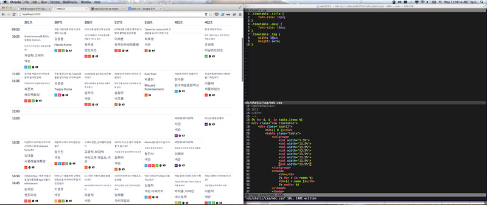
16:36 잉여짓만 하니까 또 미안한 마음이 들어, 잠깐 회사 일을 하는 척 하다, 또 장식 예술을 하고 있다.
아무래도 색상과 픽토그램이 같이 붙어 있는 이미지는 별론거 같아, 픽토그램만 떼어내고 색상 정보를 따로 입력하기로 했다.
나중에 모델에 색상 정보 넣었던 건 다시 버리고, 대신 클래스 이름을 넣고, 색상을 CSS 쪽으로 옮겼다. (휴-)
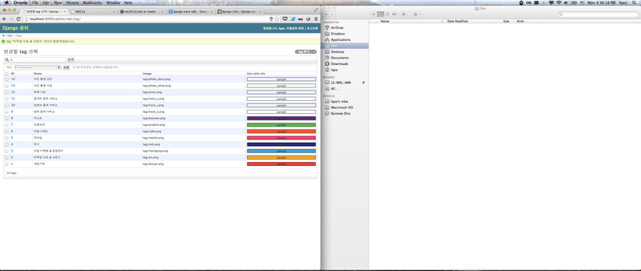
17:38 타임테이블에 태그 아이콘을 떼어내고 태그바를 붙였더니 한결 나아보였다. 하라는 코딩은 안하고 점점 CSS에 빠져들고 있다.
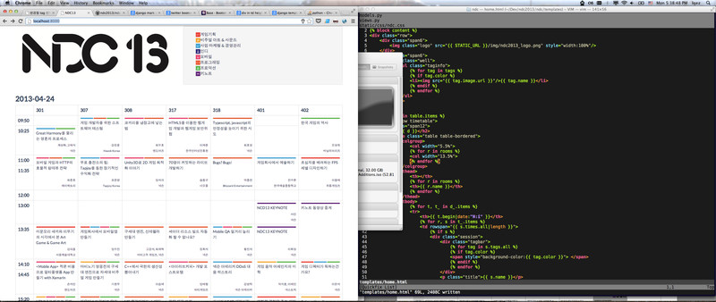
21:27 회사에서 밥을 먹고 네이게이션 바를 붙였다. 그냥 Bootstrap보다는 역시 Flat-UI가 힙해보인다, 는 착각이 든다.
너무 늦는거 같아 대충 열시에 정리하고 퇴각.
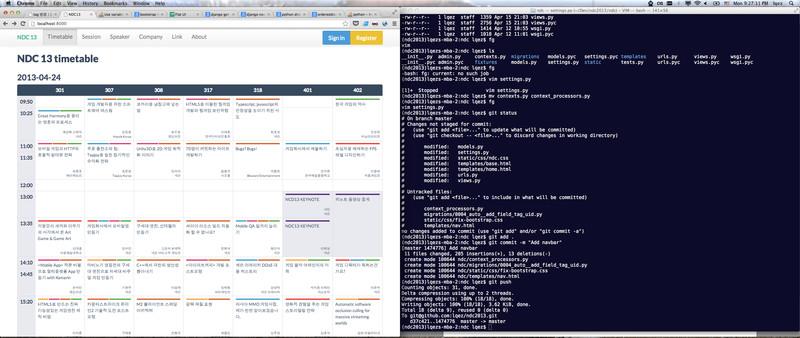
4월 16일
14:52 또 걸어서 출근했더니 오전이 쉰내와 함께 갑자기 사라지고 말았다! 아무튼 점심 먹고 또 CSS에 빠져들었다. 툴팁 붙이고 신났다!
이 때부터 imgur에 올려서 IRC 에 링크도 올리고 했다. 슬슬 초기 버프가 떨어지고 재미가 없어지는 시점이었던거 같다.
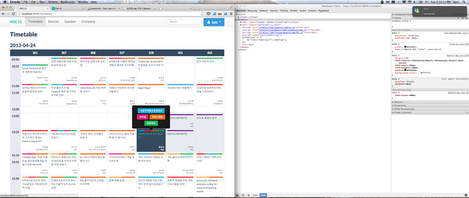
17:23 짬짬히 템플릿 코딩을 계속했다. 동료의 어깨 너머로 배운 Class based view 덕분에 뷰 코딩은 거의 안하고, 장식 예술에 빠질 수 있었다.
moot.it이 disqus보다 예뻐보여 일단 넣어보았다. 넣기 정말 쉽긴 한데, 나중에 폰 뷰에서 제대로 안나오고 페이스북 로그인만 지원해서 빼버렸다.
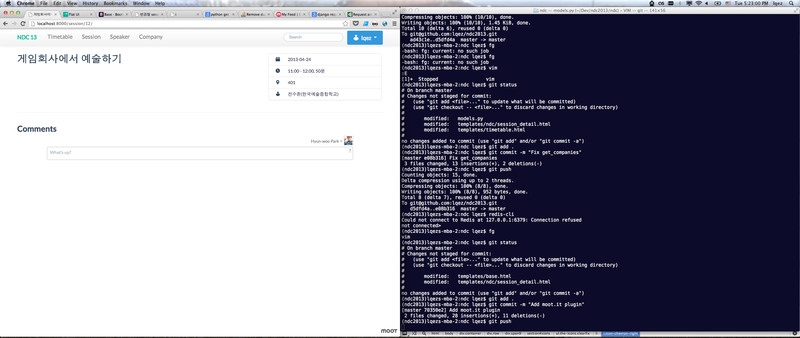
18:18 이제 대놓고 이것만 만들기 시작했다. 다음 주가 바로 컨퍼런스 일인데 너무 늦게 알리면 아무도 안 봐줄꺼고, 그러면 아쉬울까봐.
스타일이 대충 결정되고 나니 꾸미는데 속도가 좀 붙는다. 이 즈음에 태그를 눌러 필터링하는 기능이 추가되었다.
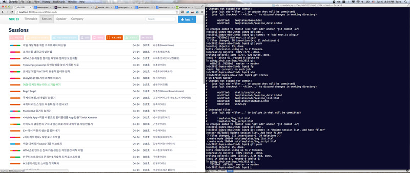
19:39 어설프게 만들고 놔두는거 싫어하는데, 마침 회식이 생겨 퇴각했다. 이날 술 먹고 체력이 저하되었ㄷㅈㅁ데ㅓㅐ러....
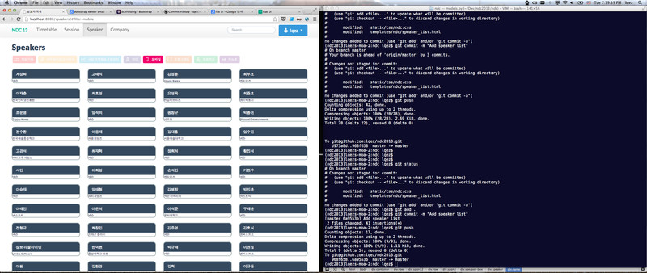
4월 17일
14:22 어제 만들다 놔둔 발표자 페이지를 꾸미기 시작했다. 트위터 아이디를 넣고 트위터 API로 프로필 이미지를 불러오도록 했다.
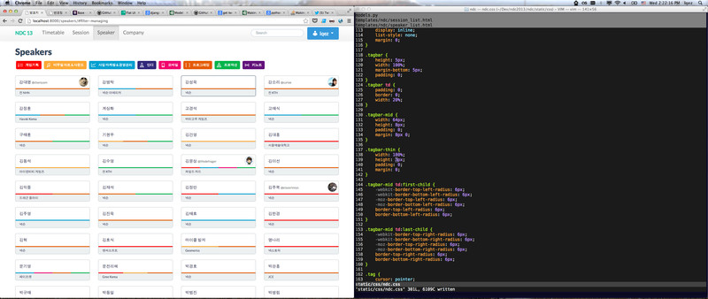
14:49 발표자 개인 페이지는 아직 넣을만한 내용이 별로 없어 한산하다. 아무튼 여기도 moot.it 넣고 마무리했다.
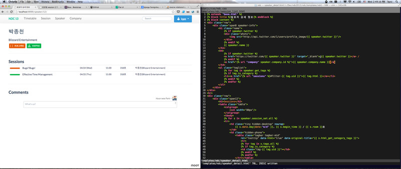
16:52 별로 중요하지도 않은 검색기능인데, 이걸 누군가에게 Django 데모 프로젝트로 보여주려면 꼭 있어야 겠다는 헛생각이 들어서,
haystack 기본 백엔드로 일단 넣었다.
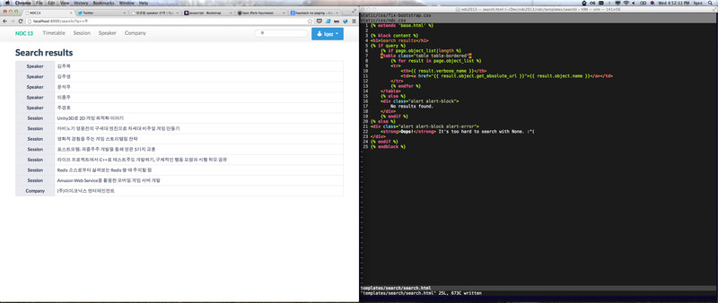
17:32 각 세부 페이지가 대충 마무리된 것 같아, 대문을 뚝딱 뚝딱 만들었다. 이미지는 조금만 쓰고 해당 컨퍼런스와 어울리게끔 만들었다.
나중에서야 깨닫게 되는 것지만, 이런 식으로 약간 그럴싸하게 만든게 문제가 아니었을까 싶다.
만들면서 계속 크기를 줄여가며 반응형 - 이 말을 별로 좋아하진 않지만 - 페이지로 계속 갈아 엎어 나갔다.
어제 술 먹고 늦게 들어온게 미안해, 퇴근하고 집에서 가족과 함께 시간을 보냈다.
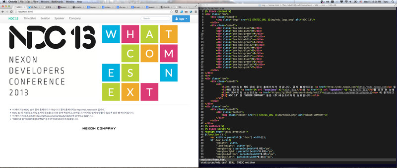
24:01 집에 와서 아까 만든 페이지를 보며 뿌듯해 하려고 했는데, 계속 크롬으로 개발해서 그런지 파이어폭스 등에서 난리가 나고 있다는 걸 몰랐다.
<td> 태그에 position: relative 가 안되는 걸 뒤늦게 깨닫고 멘붕. 이걸 해결하기 위해 자바스크립트를 끼얹는 만행을 저지르고 말았다.
테이블 셀 우하단에 발표자 이름과 회사 이름 위치시키는게 이렇게 어려울 줄이야. 이걸 새벽 3시까지 했다.
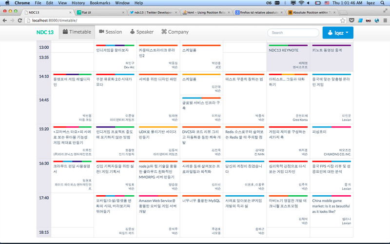
4월 18일
19:13 어젯 밤에 늦게 자서 아예 휴가를 내고 본격적으로 마무리 작업을 했다. 뭔가 많이 다듬긴 했는데 기억나는게 몇 개 없는건 왜일까.
사이트 자체 작업보다는, 회사 서버에 이걸 올려 실제 서비스하기 위한 준비를 했다.
아무튼 친구와 같이 커피숍에서 배터리 떨어질 때까지 작업하며 이메일로 로그인하기 기능의 기본을 다 만들었다.
가족과 함께 저녁을 먹고 놀다가, favicon 을 만들고 일찍 잠들었다.
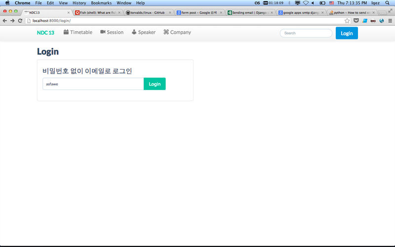
4월 19일
09:48 오늘은 무슨 일이 있어도 꼭 릴리즈해야 겠다는 마음이었으나, 버프가 완전히 떨어져 효율이 전혀 나지 않았다.
아무튼 꾸역 꾸역 코딩해서 자체 댓글 기능 붙이고, 프로필 페이지를 작성하고, Redis를 통해 캐시도 사용하도록 했고,
Google Analytics도 붙이는 등의 마무리 작업을 계속했다.
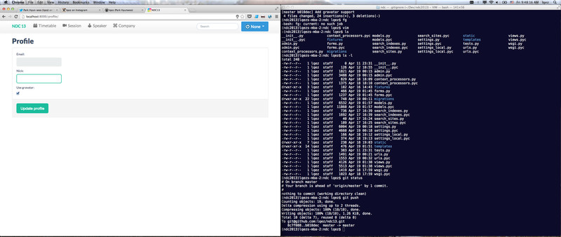
17:26 드디어 실 서버에 배포하고 릴리즈했다. 아직 목표한 만큼 다 만들진 못했지만 오늘 릴리즈하지 않으면
알리기도 어렵고해서 대충 정리해서 배포한 다음, 트위터랑 IRC 등에 홍보를 조금 했다.
또한, 해당 컨퍼런스 담당 트위터 계정에도 멘션으로 팬 페이지를 만들었다고 알렸다.
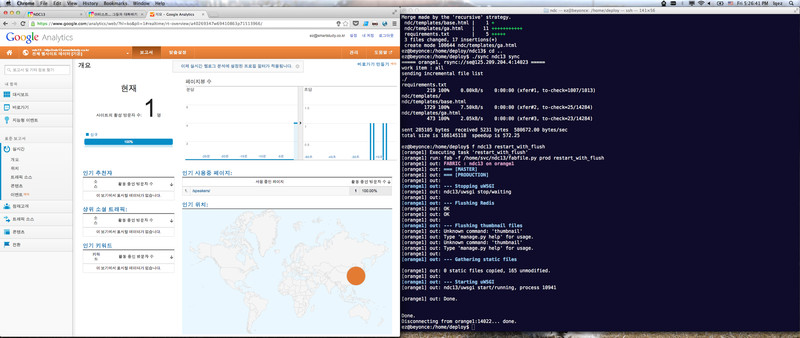
18:06 사용자들이 들어오기 시작했다! 들뜬 마음으로 쳐다보다가 근처에 가족이 와서 저녁을 먹으러 조금 일찍 퇴근했다.
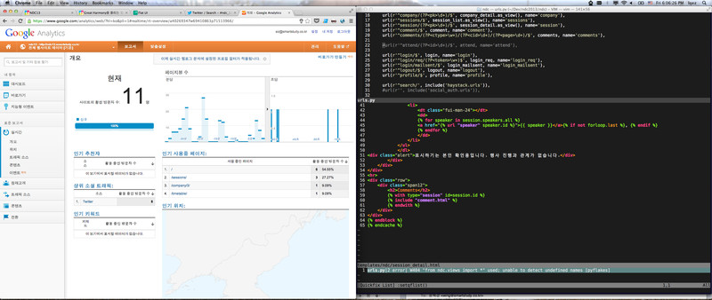
Afterwords
만들고자 했던 기능들 중, 페이스북 그래프 활용이나 자기가 듣고 싶은 세션을 체크하는 기능 등을 완성하진 못했다.
애초에 이 사이트를 만들려고 했던 것이 팬 페이지 만들어서 뭘 어떻게 해보겠다기 보다는,
어차피 앞으로 인하우스 도구를 만들 때 계속 쓸 것 같은 Django를 좀 정리해서 제대로 써보고 싶었고,
그 과정에서 몇 가지 디자인을 해보고 싶었던 점이 크다. 그 와중에 명확한 목표나 데이터가 없으면 금방 흐지부지 그만둘 것이 뻔하고,
마침 가고 싶었던 컨퍼런스를 위한 사이트가 마땅히 없는 상태에서 잘 만들면 일석 이조가 될 것이라 생각했다.
하지만 담당자로부터 컨퍼런스와 관련된 자료를 이용한 2차 저작물 제작을 허용하지 않는다는 얘기와 함께, 사이트를 내려 달라는 요청을 듣고, 오픈했던 팬 페이지를 서너시간 만에 닫을 수 밖에 없었다. 이해는 가지만 아쉬운 마음은 숨기기 어려운 것 같다.
근 일주일 동안 즐겁게 작업했고, 간만에 원없이 CSS 질 한 것으로 만족해야겠다. 잠이 오지 않아, 뒤늦게 쓰려고 했던 제작 후기 글을 본의 아니게 일찍 쓰게 되었다.
Github link: https://github.com/lqez/ndc13